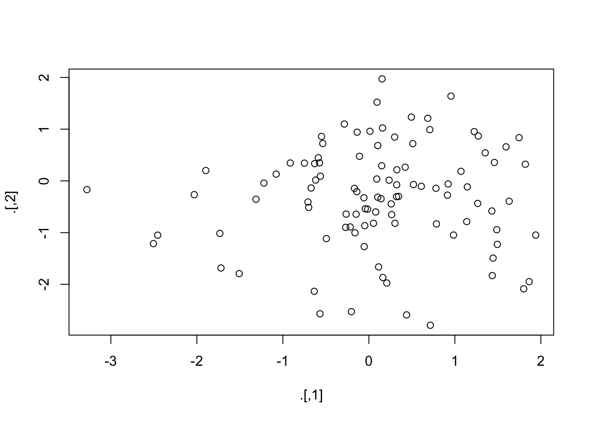

PIPES
Raymond L. Tremblay
4/26/2021
library(tidyverse)## ── Attaching packages ─────────────────────────────────────── tidyverse 1.3.1 ──## ✓ ggplot2 3.3.3 ✓ purrr 0.3.4
## ✓ tibble 3.1.1 ✓ dplyr 1.0.5
## ✓ tidyr 1.1.3 ✓ stringr 1.4.0
## ✓ readr 1.4.0 ✓ forcats 0.5.1## ── Conflicts ────────────────────────────────────────── tidyverse_conflicts() ──
## x dplyr::filter() masks stats::filter()
## x dplyr::lag() masks stats::lag()library(magrittr)##
## Attaching package: 'magrittr'## The following object is masked from 'package:purrr':
##
## set_names## The following object is masked from 'package:tidyr':
##
## extractPipe an object forward into a function or call expression.
iris## Sepal.Length Sepal.Width Petal.Length Petal.Width Species
## 1 5.1 3.5 1.4 0.2 setosa
## 2 4.9 3.0 1.4 0.2 setosa
## 3 4.7 3.2 1.3 0.2 setosa
## 4 4.6 3.1 1.5 0.2 setosa
## 5 5.0 3.6 1.4 0.2 setosa
## 6 5.4 3.9 1.7 0.4 setosa
## 7 4.6 3.4 1.4 0.3 setosa
## 8 5.0 3.4 1.5 0.2 setosa
## 9 4.4 2.9 1.4 0.2 setosa
## 10 4.9 3.1 1.5 0.1 setosa
## 11 5.4 3.7 1.5 0.2 setosa
## 12 4.8 3.4 1.6 0.2 setosa
## 13 4.8 3.0 1.4 0.1 setosa
## 14 4.3 3.0 1.1 0.1 setosa
## 15 5.8 4.0 1.2 0.2 setosa
## 16 5.7 4.4 1.5 0.4 setosa
## 17 5.4 3.9 1.3 0.4 setosa
## 18 5.1 3.5 1.4 0.3 setosa
## 19 5.7 3.8 1.7 0.3 setosa
## 20 5.1 3.8 1.5 0.3 setosa
## 21 5.4 3.4 1.7 0.2 setosa
## 22 5.1 3.7 1.5 0.4 setosa
## 23 4.6 3.6 1.0 0.2 setosa
## 24 5.1 3.3 1.7 0.5 setosa
## 25 4.8 3.4 1.9 0.2 setosa
## 26 5.0 3.0 1.6 0.2 setosa
## 27 5.0 3.4 1.6 0.4 setosa
## 28 5.2 3.5 1.5 0.2 setosa
## 29 5.2 3.4 1.4 0.2 setosa
## 30 4.7 3.2 1.6 0.2 setosa
## 31 4.8 3.1 1.6 0.2 setosa
## 32 5.4 3.4 1.5 0.4 setosa
## 33 5.2 4.1 1.5 0.1 setosa
## 34 5.5 4.2 1.4 0.2 setosa
## 35 4.9 3.1 1.5 0.2 setosa
## 36 5.0 3.2 1.2 0.2 setosa
## 37 5.5 3.5 1.3 0.2 setosa
## 38 4.9 3.6 1.4 0.1 setosa
## 39 4.4 3.0 1.3 0.2 setosa
## 40 5.1 3.4 1.5 0.2 setosa
## 41 5.0 3.5 1.3 0.3 setosa
## 42 4.5 2.3 1.3 0.3 setosa
## 43 4.4 3.2 1.3 0.2 setosa
## 44 5.0 3.5 1.6 0.6 setosa
## 45 5.1 3.8 1.9 0.4 setosa
## 46 4.8 3.0 1.4 0.3 setosa
## 47 5.1 3.8 1.6 0.2 setosa
## 48 4.6 3.2 1.4 0.2 setosa
## 49 5.3 3.7 1.5 0.2 setosa
## 50 5.0 3.3 1.4 0.2 setosa
## 51 7.0 3.2 4.7 1.4 versicolor
## 52 6.4 3.2 4.5 1.5 versicolor
## 53 6.9 3.1 4.9 1.5 versicolor
## 54 5.5 2.3 4.0 1.3 versicolor
## 55 6.5 2.8 4.6 1.5 versicolor
## 56 5.7 2.8 4.5 1.3 versicolor
## 57 6.3 3.3 4.7 1.6 versicolor
## 58 4.9 2.4 3.3 1.0 versicolor
## 59 6.6 2.9 4.6 1.3 versicolor
## 60 5.2 2.7 3.9 1.4 versicolor
## 61 5.0 2.0 3.5 1.0 versicolor
## 62 5.9 3.0 4.2 1.5 versicolor
## 63 6.0 2.2 4.0 1.0 versicolor
## 64 6.1 2.9 4.7 1.4 versicolor
## 65 5.6 2.9 3.6 1.3 versicolor
## 66 6.7 3.1 4.4 1.4 versicolor
## 67 5.6 3.0 4.5 1.5 versicolor
## 68 5.8 2.7 4.1 1.0 versicolor
## 69 6.2 2.2 4.5 1.5 versicolor
## 70 5.6 2.5 3.9 1.1 versicolor
## 71 5.9 3.2 4.8 1.8 versicolor
## 72 6.1 2.8 4.0 1.3 versicolor
## 73 6.3 2.5 4.9 1.5 versicolor
## 74 6.1 2.8 4.7 1.2 versicolor
## 75 6.4 2.9 4.3 1.3 versicolor
## 76 6.6 3.0 4.4 1.4 versicolor
## 77 6.8 2.8 4.8 1.4 versicolor
## 78 6.7 3.0 5.0 1.7 versicolor
## 79 6.0 2.9 4.5 1.5 versicolor
## 80 5.7 2.6 3.5 1.0 versicolor
## 81 5.5 2.4 3.8 1.1 versicolor
## 82 5.5 2.4 3.7 1.0 versicolor
## 83 5.8 2.7 3.9 1.2 versicolor
## 84 6.0 2.7 5.1 1.6 versicolor
## 85 5.4 3.0 4.5 1.5 versicolor
## 86 6.0 3.4 4.5 1.6 versicolor
## 87 6.7 3.1 4.7 1.5 versicolor
## 88 6.3 2.3 4.4 1.3 versicolor
## 89 5.6 3.0 4.1 1.3 versicolor
## 90 5.5 2.5 4.0 1.3 versicolor
## 91 5.5 2.6 4.4 1.2 versicolor
## 92 6.1 3.0 4.6 1.4 versicolor
## 93 5.8 2.6 4.0 1.2 versicolor
## 94 5.0 2.3 3.3 1.0 versicolor
## 95 5.6 2.7 4.2 1.3 versicolor
## 96 5.7 3.0 4.2 1.2 versicolor
## 97 5.7 2.9 4.2 1.3 versicolor
## 98 6.2 2.9 4.3 1.3 versicolor
## 99 5.1 2.5 3.0 1.1 versicolor
## 100 5.7 2.8 4.1 1.3 versicolor
## 101 6.3 3.3 6.0 2.5 virginica
## 102 5.8 2.7 5.1 1.9 virginica
## 103 7.1 3.0 5.9 2.1 virginica
## 104 6.3 2.9 5.6 1.8 virginica
## 105 6.5 3.0 5.8 2.2 virginica
## 106 7.6 3.0 6.6 2.1 virginica
## 107 4.9 2.5 4.5 1.7 virginica
## 108 7.3 2.9 6.3 1.8 virginica
## 109 6.7 2.5 5.8 1.8 virginica
## 110 7.2 3.6 6.1 2.5 virginica
## 111 6.5 3.2 5.1 2.0 virginica
## 112 6.4 2.7 5.3 1.9 virginica
## 113 6.8 3.0 5.5 2.1 virginica
## 114 5.7 2.5 5.0 2.0 virginica
## 115 5.8 2.8 5.1 2.4 virginica
## 116 6.4 3.2 5.3 2.3 virginica
## 117 6.5 3.0 5.5 1.8 virginica
## 118 7.7 3.8 6.7 2.2 virginica
## 119 7.7 2.6 6.9 2.3 virginica
## 120 6.0 2.2 5.0 1.5 virginica
## 121 6.9 3.2 5.7 2.3 virginica
## 122 5.6 2.8 4.9 2.0 virginica
## 123 7.7 2.8 6.7 2.0 virginica
## 124 6.3 2.7 4.9 1.8 virginica
## 125 6.7 3.3 5.7 2.1 virginica
## 126 7.2 3.2 6.0 1.8 virginica
## 127 6.2 2.8 4.8 1.8 virginica
## 128 6.1 3.0 4.9 1.8 virginica
## 129 6.4 2.8 5.6 2.1 virginica
## 130 7.2 3.0 5.8 1.6 virginica
## 131 7.4 2.8 6.1 1.9 virginica
## 132 7.9 3.8 6.4 2.0 virginica
## 133 6.4 2.8 5.6 2.2 virginica
## 134 6.3 2.8 5.1 1.5 virginica
## 135 6.1 2.6 5.6 1.4 virginica
## 136 7.7 3.0 6.1 2.3 virginica
## 137 6.3 3.4 5.6 2.4 virginica
## 138 6.4 3.1 5.5 1.8 virginica
## 139 6.0 3.0 4.8 1.8 virginica
## 140 6.9 3.1 5.4 2.1 virginica
## 141 6.7 3.1 5.6 2.4 virginica
## 142 6.9 3.1 5.1 2.3 virginica
## 143 5.8 2.7 5.1 1.9 virginica
## 144 6.8 3.2 5.9 2.3 virginica
## 145 6.7 3.3 5.7 2.5 virginica
## 146 6.7 3.0 5.2 2.3 virginica
## 147 6.3 2.5 5.0 1.9 virginica
## 148 6.5 3.0 5.2 2.0 virginica
## 149 6.2 3.4 5.4 2.3 virginica
## 150 5.9 3.0 5.1 1.8 virginicaExposition pipe
Expose the names in lhs to the rhs expression. This is useful when functions do not have a built-in data argument.
iris %>%
subset(Sepal.Length > mean(Sepal.Length)) ## Sepal.Length Sepal.Width Petal.Length Petal.Width Species
## 51 7.0 3.2 4.7 1.4 versicolor
## 52 6.4 3.2 4.5 1.5 versicolor
## 53 6.9 3.1 4.9 1.5 versicolor
## 55 6.5 2.8 4.6 1.5 versicolor
## 57 6.3 3.3 4.7 1.6 versicolor
## 59 6.6 2.9 4.6 1.3 versicolor
## 62 5.9 3.0 4.2 1.5 versicolor
## 63 6.0 2.2 4.0 1.0 versicolor
## 64 6.1 2.9 4.7 1.4 versicolor
## 66 6.7 3.1 4.4 1.4 versicolor
## 69 6.2 2.2 4.5 1.5 versicolor
## 71 5.9 3.2 4.8 1.8 versicolor
## 72 6.1 2.8 4.0 1.3 versicolor
## 73 6.3 2.5 4.9 1.5 versicolor
## 74 6.1 2.8 4.7 1.2 versicolor
## 75 6.4 2.9 4.3 1.3 versicolor
## 76 6.6 3.0 4.4 1.4 versicolor
## 77 6.8 2.8 4.8 1.4 versicolor
## 78 6.7 3.0 5.0 1.7 versicolor
## 79 6.0 2.9 4.5 1.5 versicolor
## 84 6.0 2.7 5.1 1.6 versicolor
## 86 6.0 3.4 4.5 1.6 versicolor
## 87 6.7 3.1 4.7 1.5 versicolor
## 88 6.3 2.3 4.4 1.3 versicolor
## 92 6.1 3.0 4.6 1.4 versicolor
## 98 6.2 2.9 4.3 1.3 versicolor
## 101 6.3 3.3 6.0 2.5 virginica
## 103 7.1 3.0 5.9 2.1 virginica
## 104 6.3 2.9 5.6 1.8 virginica
## 105 6.5 3.0 5.8 2.2 virginica
## 106 7.6 3.0 6.6 2.1 virginica
## 108 7.3 2.9 6.3 1.8 virginica
## 109 6.7 2.5 5.8 1.8 virginica
## 110 7.2 3.6 6.1 2.5 virginica
## 111 6.5 3.2 5.1 2.0 virginica
## 112 6.4 2.7 5.3 1.9 virginica
## 113 6.8 3.0 5.5 2.1 virginica
## 116 6.4 3.2 5.3 2.3 virginica
## 117 6.5 3.0 5.5 1.8 virginica
## 118 7.7 3.8 6.7 2.2 virginica
## 119 7.7 2.6 6.9 2.3 virginica
## 120 6.0 2.2 5.0 1.5 virginica
## 121 6.9 3.2 5.7 2.3 virginica
## 123 7.7 2.8 6.7 2.0 virginica
## 124 6.3 2.7 4.9 1.8 virginica
## 125 6.7 3.3 5.7 2.1 virginica
## 126 7.2 3.2 6.0 1.8 virginica
## 127 6.2 2.8 4.8 1.8 virginica
## 128 6.1 3.0 4.9 1.8 virginica
## 129 6.4 2.8 5.6 2.1 virginica
## 130 7.2 3.0 5.8 1.6 virginica
## 131 7.4 2.8 6.1 1.9 virginica
## 132 7.9 3.8 6.4 2.0 virginica
## 133 6.4 2.8 5.6 2.2 virginica
## 134 6.3 2.8 5.1 1.5 virginica
## 135 6.1 2.6 5.6 1.4 virginica
## 136 7.7 3.0 6.1 2.3 virginica
## 137 6.3 3.4 5.6 2.4 virginica
## 138 6.4 3.1 5.5 1.8 virginica
## 139 6.0 3.0 4.8 1.8 virginica
## 140 6.9 3.1 5.4 2.1 virginica
## 141 6.7 3.1 5.6 2.4 virginica
## 142 6.9 3.1 5.1 2.3 virginica
## 144 6.8 3.2 5.9 2.3 virginica
## 145 6.7 3.3 5.7 2.5 virginica
## 146 6.7 3.0 5.2 2.3 virginica
## 147 6.3 2.5 5.0 1.9 virginica
## 148 6.5 3.0 5.2 2.0 virginica
## 149 6.2 3.4 5.4 2.3 virginica
## 150 5.9 3.0 5.1 1.8 virginicairis %>%
subset(Sepal.Length > mean(Sepal.Length)) %$%
cor(Sepal.Length, Sepal.Width)## [1] 0.3361992iris %>%
filter(Sepal.Length > 1.6 ) %$%
cor(Sepal.Length, Sepal.Width)## [1] -0.1175698Second Example of Exposition Pipe
#set.seed(1234)
data.frame(z = rnorm(100)) %$%
ts.plot(z)
Assignment pipe
Pipe an object forward into a function or call expression and update the lhs object with the resulting value.
x <- rnorm(100)
x## [1] 1.600761238 -0.515581213 -0.569114677 -0.176786798 -0.968761347
## [6] 0.823308478 1.106289218 0.712051211 -0.240389611 -0.010819648
## [11] 0.281481795 -0.266281718 2.145215906 0.228270529 0.244961746
## [16] 0.190393320 0.368478677 0.221637867 0.716700654 1.843013168
## [21] 1.242842762 0.310859002 0.112797625 -0.323144568 -0.374714286
## [26] -0.689078967 -1.135209836 0.931741214 -1.115430390 -0.950103607
## [31] -0.500293654 -1.085496259 0.033293155 0.555832859 -0.187950929
## [36] 0.171752863 0.608016070 1.349881487 -0.811677976 -1.938478104
## [41] -0.295967256 -0.748284435 -1.089472742 0.743010994 -1.026101608
## [46] 1.121560007 -0.008507891 0.805021204 -1.802022690 -0.300123232
## [51] -0.655335846 1.129867838 -0.564248761 -0.643475064 -0.435373854
## [56] 2.403458274 0.456898171 -0.517451223 0.524088174 -1.215466898
## [61] -1.476429275 -0.202896767 1.063732367 0.725890442 -0.671768864
## [66] 0.121340485 0.073935040 -1.007363776 -0.408143138 -1.038390522
## [71] -0.493675359 1.448749721 0.341234597 1.250722545 -0.120017074
## [76] 1.116007342 0.680528858 -1.300333888 0.259185680 -0.874684520
## [81] 0.218734790 -0.595264450 -0.234090937 0.020378048 -1.409348970
## [86] -0.335182851 -0.061274462 -0.572463353 -0.108556885 -1.782204480
## [91] 0.998398383 0.838512164 1.413817210 1.044532547 -0.516466509
## [96] 1.536115233 -0.433444430 -1.093360728 0.097156675 0.850086900x2= data.frame(x)
x2## x
## 1 1.600761238
## 2 -0.515581213
## 3 -0.569114677
## 4 -0.176786798
## 5 -0.968761347
## 6 0.823308478
## 7 1.106289218
## 8 0.712051211
## 9 -0.240389611
## 10 -0.010819648
## 11 0.281481795
## 12 -0.266281718
## 13 2.145215906
## 14 0.228270529
## 15 0.244961746
## 16 0.190393320
## 17 0.368478677
## 18 0.221637867
## 19 0.716700654
## 20 1.843013168
## 21 1.242842762
## 22 0.310859002
## 23 0.112797625
## 24 -0.323144568
## 25 -0.374714286
## 26 -0.689078967
## 27 -1.135209836
## 28 0.931741214
## 29 -1.115430390
## 30 -0.950103607
## 31 -0.500293654
## 32 -1.085496259
## 33 0.033293155
## 34 0.555832859
## 35 -0.187950929
## 36 0.171752863
## 37 0.608016070
## 38 1.349881487
## 39 -0.811677976
## 40 -1.938478104
## 41 -0.295967256
## 42 -0.748284435
## 43 -1.089472742
## 44 0.743010994
## 45 -1.026101608
## 46 1.121560007
## 47 -0.008507891
## 48 0.805021204
## 49 -1.802022690
## 50 -0.300123232
## 51 -0.655335846
## 52 1.129867838
## 53 -0.564248761
## 54 -0.643475064
## 55 -0.435373854
## 56 2.403458274
## 57 0.456898171
## 58 -0.517451223
## 59 0.524088174
## 60 -1.215466898
## 61 -1.476429275
## 62 -0.202896767
## 63 1.063732367
## 64 0.725890442
## 65 -0.671768864
## 66 0.121340485
## 67 0.073935040
## 68 -1.007363776
## 69 -0.408143138
## 70 -1.038390522
## 71 -0.493675359
## 72 1.448749721
## 73 0.341234597
## 74 1.250722545
## 75 -0.120017074
## 76 1.116007342
## 77 0.680528858
## 78 -1.300333888
## 79 0.259185680
## 80 -0.874684520
## 81 0.218734790
## 82 -0.595264450
## 83 -0.234090937
## 84 0.020378048
## 85 -1.409348970
## 86 -0.335182851
## 87 -0.061274462
## 88 -0.572463353
## 89 -0.108556885
## 90 -1.782204480
## 91 0.998398383
## 92 0.838512164
## 93 1.413817210
## 94 1.044532547
## 95 -0.516466509
## 96 1.536115233
## 97 -0.433444430
## 98 -1.093360728
## 99 0.097156675
## 100 0.850086900df= x %<>% abs %>% mean
df## [1] 0.7297905x2 %>% select(x) %>%
mutate(sqrtt= sqrt(x))## Warning in sqrt(x): NaNs produced## x sqrtt
## 1 1.600761238 1.2652119
## 2 -0.515581213 NaN
## 3 -0.569114677 NaN
## 4 -0.176786798 NaN
## 5 -0.968761347 NaN
## 6 0.823308478 0.9073635
## 7 1.106289218 1.0518028
## 8 0.712051211 0.8438313
## 9 -0.240389611 NaN
## 10 -0.010819648 NaN
## 11 0.281481795 0.5305486
## 12 -0.266281718 NaN
## 13 2.145215906 1.4646556
## 14 0.228270529 0.4777767
## 15 0.244961746 0.4949361
## 16 0.190393320 0.4363408
## 17 0.368478677 0.6070244
## 18 0.221637867 0.4707843
## 19 0.716700654 0.8465817
## 20 1.843013168 1.3575762
## 21 1.242842762 1.1148286
## 22 0.310859002 0.5575473
## 23 0.112797625 0.3358536
## 24 -0.323144568 NaN
## 25 -0.374714286 NaN
## 26 -0.689078967 NaN
## 27 -1.135209836 NaN
## 28 0.931741214 0.9652674
## 29 -1.115430390 NaN
## 30 -0.950103607 NaN
## 31 -0.500293654 NaN
## 32 -1.085496259 NaN
## 33 0.033293155 0.1824641
## 34 0.555832859 0.7455420
## 35 -0.187950929 NaN
## 36 0.171752863 0.4144308
## 37 0.608016070 0.7797539
## 38 1.349881487 1.1618440
## 39 -0.811677976 NaN
## 40 -1.938478104 NaN
## 41 -0.295967256 NaN
## 42 -0.748284435 NaN
## 43 -1.089472742 NaN
## 44 0.743010994 0.8619809
## 45 -1.026101608 NaN
## 46 1.121560007 1.0590373
## 47 -0.008507891 NaN
## 48 0.805021204 0.8972297
## 49 -1.802022690 NaN
## 50 -0.300123232 NaN
## 51 -0.655335846 NaN
## 52 1.129867838 1.0629524
## 53 -0.564248761 NaN
## 54 -0.643475064 NaN
## 55 -0.435373854 NaN
## 56 2.403458274 1.5503091
## 57 0.456898171 0.6759424
## 58 -0.517451223 NaN
## 59 0.524088174 0.7239393
## 60 -1.215466898 NaN
## 61 -1.476429275 NaN
## 62 -0.202896767 NaN
## 63 1.063732367 1.0313740
## 64 0.725890442 0.8519920
## 65 -0.671768864 NaN
## 66 0.121340485 0.3483396
## 67 0.073935040 0.2719100
## 68 -1.007363776 NaN
## 69 -0.408143138 NaN
## 70 -1.038390522 NaN
## 71 -0.493675359 NaN
## 72 1.448749721 1.2036402
## 73 0.341234597 0.5841529
## 74 1.250722545 1.1183571
## 75 -0.120017074 NaN
## 76 1.116007342 1.0564125
## 77 0.680528858 0.8249417
## 78 -1.300333888 NaN
## 79 0.259185680 0.5091028
## 80 -0.874684520 NaN
## 81 0.218734790 0.4676909
## 82 -0.595264450 NaN
## 83 -0.234090937 NaN
## 84 0.020378048 0.1427517
## 85 -1.409348970 NaN
## 86 -0.335182851 NaN
## 87 -0.061274462 NaN
## 88 -0.572463353 NaN
## 89 -0.108556885 NaN
## 90 -1.782204480 NaN
## 91 0.998398383 0.9991989
## 92 0.838512164 0.9157031
## 93 1.413817210 1.1890405
## 94 1.044532547 1.0220238
## 95 -0.516466509 NaN
## 96 1.536115233 1.2394012
## 97 -0.433444430 NaN
## 98 -1.093360728 NaN
## 99 0.097156675 0.3116997
## 100 0.850086900 0.9220016df2=x %<>% abs %>% sort
df2## [1] 0.7297905Tee pipe
Pipe a value forward into a function- or call expression and return the original value instead of the result. This is useful when an expression is used for its side-effect, say plotting or printing.
rnorm(200) %>%
matrix(ncol = 2)%T>%
plot %>% # plot usually does not return anything.
colSums
## [1] 1.285721 10.305335Other margrittr function
is_greater_than, “>”
iris %>%
select(Sepal.Width) %>%
is_greater_than(3.5) %>%
head()## Sepal.Width
## [1,] FALSE
## [2,] FALSE
## [3,] FALSE
## [4,] FALSE
## [5,] TRUE
## [6,] TRUEiris %>%
select(Sepal.Width) %>%
divide_by(3)## Sepal.Width
## 1 1.1666667
## 2 1.0000000
## 3 1.0666667
## 4 1.0333333
## 5 1.2000000
## 6 1.3000000
## 7 1.1333333
## 8 1.1333333
## 9 0.9666667
## 10 1.0333333
## 11 1.2333333
## 12 1.1333333
## 13 1.0000000
## 14 1.0000000
## 15 1.3333333
## 16 1.4666667
## 17 1.3000000
## 18 1.1666667
## 19 1.2666667
## 20 1.2666667
## 21 1.1333333
## 22 1.2333333
## 23 1.2000000
## 24 1.1000000
## 25 1.1333333
## 26 1.0000000
## 27 1.1333333
## 28 1.1666667
## 29 1.1333333
## 30 1.0666667
## 31 1.0333333
## 32 1.1333333
## 33 1.3666667
## 34 1.4000000
## 35 1.0333333
## 36 1.0666667
## 37 1.1666667
## 38 1.2000000
## 39 1.0000000
## 40 1.1333333
## 41 1.1666667
## 42 0.7666667
## 43 1.0666667
## 44 1.1666667
## 45 1.2666667
## 46 1.0000000
## 47 1.2666667
## 48 1.0666667
## 49 1.2333333
## 50 1.1000000
## 51 1.0666667
## 52 1.0666667
## 53 1.0333333
## 54 0.7666667
## 55 0.9333333
## 56 0.9333333
## 57 1.1000000
## 58 0.8000000
## 59 0.9666667
## 60 0.9000000
## 61 0.6666667
## 62 1.0000000
## 63 0.7333333
## 64 0.9666667
## 65 0.9666667
## 66 1.0333333
## 67 1.0000000
## 68 0.9000000
## 69 0.7333333
## 70 0.8333333
## 71 1.0666667
## 72 0.9333333
## 73 0.8333333
## 74 0.9333333
## 75 0.9666667
## 76 1.0000000
## 77 0.9333333
## 78 1.0000000
## 79 0.9666667
## 80 0.8666667
## 81 0.8000000
## 82 0.8000000
## 83 0.9000000
## 84 0.9000000
## 85 1.0000000
## 86 1.1333333
## 87 1.0333333
## 88 0.7666667
## 89 1.0000000
## 90 0.8333333
## 91 0.8666667
## 92 1.0000000
## 93 0.8666667
## 94 0.7666667
## 95 0.9000000
## 96 1.0000000
## 97 0.9666667
## 98 0.9666667
## 99 0.8333333
## 100 0.9333333
## 101 1.1000000
## 102 0.9000000
## 103 1.0000000
## 104 0.9666667
## 105 1.0000000
## 106 1.0000000
## 107 0.8333333
## 108 0.9666667
## 109 0.8333333
## 110 1.2000000
## 111 1.0666667
## 112 0.9000000
## 113 1.0000000
## 114 0.8333333
## 115 0.9333333
## 116 1.0666667
## 117 1.0000000
## 118 1.2666667
## 119 0.8666667
## 120 0.7333333
## 121 1.0666667
## 122 0.9333333
## 123 0.9333333
## 124 0.9000000
## 125 1.1000000
## 126 1.0666667
## 127 0.9333333
## 128 1.0000000
## 129 0.9333333
## 130 1.0000000
## 131 0.9333333
## 132 1.2666667
## 133 0.9333333
## 134 0.9333333
## 135 0.8666667
## 136 1.0000000
## 137 1.1333333
## 138 1.0333333
## 139 1.0000000
## 140 1.0333333
## 141 1.0333333
## 142 1.0333333
## 143 0.9000000
## 144 1.0666667
## 145 1.1000000
## 146 1.0000000
## 147 0.8333333
## 148 1.0000000
## 149 1.1333333
## 150 1.0000000PIPES
Ejercicio con el packete “maggritr”
Este paquete proporciona un mecanismo para encadenar comandos con un nuevo operador de tubería hacia adelante,%>%. Este operador enviará un valor, o el resultado de una expresión, en la siguiente llamada / expresión de función.
En el mismo paquete hay múltiples otras funciones como
“%<>%”, “%$%,”%T>%“,”is_less_than" y otros.
El trabajo consistente en que tiene que seleccionar dos de las funciones en el paquete Excluyendo “%>%” y solamente una de las siguientes (“%<>%”, “%$%,”%T>%"), y para cada uno dar 2 ejemplos como utilizar esa función. Tiene que ser EXPLICITO de como funciona las funciones que enseñan y su interpretación. Puede ser que tiene que demostrar el resultado si no los usa correctamente. Pon se el lugar de una persona que no sabe nada de R, que tiene que explicar paso a paso como funciona las funciones. Usa datos sencillo, crea unos data frame en RMarkdown (no importa los datos).
Para ver la lista de funciones en el paquete vea
library(magrittr)
help(package=magrittr)Puntuación (30 puntos total) Cada función bien explicada y con unos ejemplos sencillos, 15 puntos (10 puntos por las explicaciones y 5 puntos por los scripts correctos).